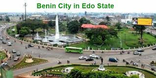
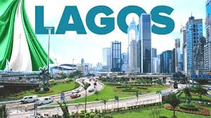

ABOUT
Nigeria is a federation of 36 states, each of which is a semi-autonomous political unit that shares power with the federal government as enumerated under the Constitution of the Federal Republic of Nigeria. In addition to the states, there is the Federal Capital Territory (FCT), in which the capital city of Abuja is located.
The FCT is not a state, but a territory of the federal government. Governed by an administration headed by a minister. Each state is subdivided into local government areas (LGAs). Under the Nigerian Constitution, the 36 states enjoy substantial autonomy but are not sovereign entities, as ultimate authority lies with the federal government.
Benue
Benue is a State in the North Central region of Nigeria. It has an estimated population of about 4,253,641 in the 2006 census. The state was created in 1976 and was among the seven states created at that time. The state derives its name from the Benue River initially called Ber-nor, a compound word in Tiv language which means river or lake of hippopotamus (ber meaning river or lake, while nor is the name for hippopotamus) the name Ber-nor was corrupted to BENUE by colonial masters, the river is the second largest river in Nigeria after the River Niger.
The state borders Nasarawa State to the North; Taraba State to the East; Kogi State to the West; Enugu State to the South-West; Ebonyi and Cross-Rivers State to the South; and has an international border with Cameroon to the South-East. It is inhabited predominantly by the Tiv, Idoma, and Igede people. Minority ethnic groups in Benue are Etulo, Igbo, Hausa, and Jukun people etc. Its capital is Makurdi.
Benue is a rich agricultural region; common crops cultivated in the state include oranges, yams, mangoes, sweet potatoes, cassava, soya beans, guinea corn, flax, sesame, rice, groundnuts, and palm trees.
Climate
Benue state has a Tropical wet and dry or savanna climate. The city's yearly temperature is 29.38 °C (84.88 °F) and it is −0.08% lower than Nigeria's averages. The state receives about 135.2 millimeters (5.32 inches) of precipitation and has 160.01 rainy days (43.84% of the time) annually.
Kogi
Kogi is a state in the North Central region of Nigeria, bordered to the west by the states of Ekiti and Kwara, to the north by the Federal Capital Territory, to the northeast by Nasarawa State, to the northwest by Niger State, to the southwest by Edo and Ondo states, to the southeast by the states of Anambra and Enugu, and to the east by Benue State. It is the only state in Nigeria to border ten other states.
Named after the Hausa word for river (Kogi). Kogi State was formed from parts of Benue State, Niger State, and Kwara State on 27 August 1991. The state is nicknamed the "Confluence State" because the confluence of the River Niger and the River Benue occurs next to its capital, Lokoja.
Climate
The climate of the state has an annual rainfall total of between 1,100mm and 1,300mm. The rainy season lasts from April to October each year while the dry season lasts from November to March. The dry season is very dusty and cold as a result of the north-easterly winds, which bring in the harmattan.
Kwara
Kwara (Yoruba: Ìpínlẹ̀ Kwárà) is a state in Western Nigeria, bordered to the east by Kogi State, to the north by Niger State, and to the south by Ekiti, Osun, and Oyo states, while its western border makes up part of the international border with Benin. Its capital is the city of Ilorin and the state has 16 local government areas.
Of the 36 states of Nigeria, Kwara is the ninth largest in area but the sixth least populous with an estimated population of about 3.2 million as of 2016.
Climate
Kwara State has been inhabited for years by various ethnic groups, primarily the majority Yoruba people, but there are sizable minorities of Nupe people in the northeast, Bariba (Baatonu) and Busa (Bokobaru) peoples in the west, and Fulani people in Ilorin.
Nasarawa
Nasarawa is a state in the North Central region of Nigeria, bordered to the east by the states of Taraba and Plateau, to the north by Kaduna State, to the south by the states of Benue and Kogi, and to the west by the Federal Capital Territory.
Climate
In Nasarawa, the dry season is humid and partially cloudy, and it is hot all year long. The wet season is oppressive and overcast. The average annual temperature ranges from 63 to 95 degrees Fahrenheit, rarely falling below 57 or rising above 101.
Niger
Niger is a state in the North Central region of Nigeria. It is the largest state in the country by area. The state capital is Minna. Niger state was formed in 1976 when the then North-Western State was divided into Niger State and Sokoto State.
Climate
The state has a very warm climate with a yearly average of 34° Celsius. It is warm or hot all year, but there are few typically tropical and sultry months. The best time for traveling is from November to April.
Plateau
Plateau is a north-central Nigerian state. It is located near the centre of Nigeria and includes a range of hills surrounding the Jos Plateau. Plateau State is described as "The Home of Peace and Tourism".
Natural resources
The natural resources in the state include barite, bauxite, bentonite, bismuth, cassiterite, clay, coal, emeralds, fluoride, granite, iron ore, kaolin, lead/zinc, marble, molybdenite, pyrochlore, salt, tantalite/columbite, and tin/wolfram.
Federal Capital Territory
The Federal Capital Territory (FCT) is a federal territory in central Nigeria. Abuja, the capital city of Nigeria, is located in this territory. The FCT was formed in 1976 from parts of the states of old Kaduna, Kwara, Niger, and Plateau states, with the bulk of land mass carved out of Niger state.
Unlike other states of Nigeria, which are headed by elected Governors, it is administered by the Federal Capital Territory Administration, headed by a minister, who is appointed by the president.
Adamawa
Adamawa is a state in the North-East geopolitical zone of Nigeria, bordered by Borno to the northwest, Gombe to the west, and Taraba to the southwest while its eastern border forms part of the national border with Cameroon. Adamawa is the eighth largest in the area but the thirteenth least populous with an estimated population of about 4.25 million as of 2016.
Bauchi
Bauchi (Fula: Leydi Bauchi) is a state in the North-East geopolitical zone of Nigeria. It is bordered by Jigawa to the north, Yobe to the northeast, Gombe to the east, Taraba and Plateau to the south, Kaduna to the west and Kano to the northwest. It takes its name from the historic city of Bauchi, which also serves as its capital.
Climate
Bauchi has an oppressive wet season while the dry season is partly cloudy, and it is hot year-round.
Borno

Borno is a state in the North-East geopolitical zone of Nigeria. It is bordered by Yobe to the west, Gombe to the southwest, Adamawa to the south, and its eastern border forms part of the national border with Cameroon.
Climate
The climate of Borno state is characteristic of rainfall variability, with a strong latitudinal zone. The commencement of the rainy season is around June/July, with rainfall from 3,800 mm to below 650 mm annually.
Gombe
Gombe State (Fula: Lesdi Gommbe) is a state in northeastern Nigeria. It is bordered to the north and northeast by Borno for 93 km, to the west by Bauchi State, to the southeast by Adamawa State, and to the south by Taraba State for 58 km, to the southeast by Adamawa State for 95 km, and to the west by Bauchi State for 277 km (172 miles).
Gombe is the state capital of Gombe state and it was formed from a part of Bauchi State on 1 October 1996. Of the 36 states in Nigeria, Gombe is the 21st largest in area and the 32nd most populous, with an estimated population of about 3.25 million as of 2016.
Taraba
Taraba is a state in north-eastern Nigeria, named after the Taraba River, which traverses the southern part of the state. It is known as "Nature's Gift to the Nation". Its capital is Jalingo. The state's main ethnic groups are the Fulani, Mumuye, Mambilla, Jukun, Kuteb, Karimjo Wurkun, Tiv, Yandang, Ndola, Ichen, Jenjo, Tigon, and Jibu.
The northern part is mainly dominated by the Fulani, Wurkun, Mumuye, and Sho. The southern part is dominated by the Jukun, Tiv, Chamba, Kuteb, and Ichen. The central region is mainly occupied by the Fulani, Mambilla, Ndola, Tigon, Jibu, Wurbo, and Daka people. There are about 80 distinct ethnic groups and their languages in the state.
Yobe
Yobe is a state located in northeastern Nigeria. A mainly agricultural state, it was created on 27 August 1991. Yobe State was carved out of Borno State. The capital of Yobe State is Damaturu, and its largest city by population is Potiskum. While the largest by land area is Fune, the Potiskum local government area is a place of farmers and marketers, the largest cattle market in Africa is located in Potiskum.
Kebbi
Kebbi (Hausa: Jihar Kebbi; Fulfulde: Leydi Kebbi) state in northwestern Nigeria. Kebbi State is bordered east and north of Sokoto and Zamfara states, and to the south by Niger state while its western border forms part of the national borders with Benin Republic for 103 km (64 miles) and Niger for 207 km (129 miles). Named for the city of Birnin Kebbi—the state;s capital and largest city, Kebbi state was formed from Sokoto state on 27 August 1991. Of the 36 states of Nigeria, Kebbi is the tenth largest in area and 18th most populous, with an estimated population of about 4.4 million as of 2016.
The state is known as land of equity Geographically, the state is within the tropical West Sudanian savanna ecoregion. Important geographic features of Kebbi state include the Sokoto River, which flows through Kebbi into the River Niger, which continues south before reaching the Kainji Lake, half of which is in Kebbi. Among the state's nature are a number of fish species exhibited during the massive Argungu Fishing Festival, along with hippopotamus, West African manatee, and transient African bush elephant populations.
Jigawa
Jigawa (Hausa: Jihar Jigawa; Fula: Leydi Jigawa) is a state in Nigeria, located in the northern region of the country. Jigawa was created on 27 August 1991, under the General Ibrahim Babangida military administration. Jigawa State was formerly part of Kano State and was located in the northeastern-most region of Kano State, and it forms part of Nigeria's national border with the Republic of Niger. The state capital and largest city is Dutse.
The state economy remains largely dependent on agriculture. Scarcity of arable land within the state has become increasingly problematic in recent years, with arable farmland increasingly vulnerable to natural disasters like flooding, which will become more prevalent due to climate change.
Jigawa
Zamfara (Hausa: Jihar Zamfara; Fula: Leydi Zamfara;) is a state in northwestern Nigeria. The capital of Zamfara state is Gusau and its current governor is Dauda Lawal. Until 1996, the area was part of Sokoto State. Zamfara is a densely populated area with the Hausa. The Zamfarawa mainly in Anka, Gummi, Bukkuyum and Talata Mafara Local Governments areas. Gobirawa populated Shinkafi Local Government.
Gobirawa actually migrated from the Gobir Kingdom. Burmawa are found in Bakura and Fulani peopled Bungudu, Maradun, Gusau and are scattered all over the State. In Chafe, Bungudu and Maru, most are mainly Katsinawa, Garewatawa and Hadejawa. While, Alibawa people are located at Kaura Namoda and Zurmi, the Alawan Shehu Usmanu Fulani's are found in Birninmagaji.
Sokoto
Sokoto (Hausa: Jihar Sokoto; FulaLeydi Sokoto) is one of the 36 states of Nigeria, located in the extreme northwest of the country. It is bounded by Republic of the Niger to the north and west for 363 km (226 miles), and the states of Zamfara to the east, and Kebbi to the south and west, partly across the Ka River. Its capital and largest city is the city of Sokoto. Sokoto is located near to the confluence of the Sokoto River and the Rima River. As of 2022 it has an estimated population of more than 6.3 million.
Being the seat of the former Sokoto Caliphate, the city is predominantly Muslim and an important seat of Islamic learning in Nigeria. The Sultan who heads the caliphate is effectively the spiritual leader of Nigerian Muslims.
Katsina
Katsina (Hausa: Jihar Katsina جِىهَرْ کَڟِࢽَ; Fula: Leydi Katsina is a state in the northwestern geopolitical zone of Nigeria. Katsina State borders the Republic of Niger to the north for 250 km (155 miles) and the States of Jigawa for 164 km (102 miles) and Kano to the east, Kaduna to the south for 161 km (100 miles) and Zamfara to the west.
Katsina has a tropical steppe climate, bordering on a tropical savanna climate. The city's yearly temperature is 30.89 °C (87.6 °F) and it is 1.43% higher than Nigeria's averages. Katsina typically receives about 791.61 millimeters of precipitation and has 54.63 rainy days (14.97% of the time) annually https://en.wikipedia.org/wiki/Katsina
Kaduna
Kaduna (Hausa: Jihar Kaduna; Fula: Leydi Kaduna) is a state in the northwest geopolitical zone of Nigeria. The state capital is its namesake, the city of Kaduna. Created in 1967 as North-Central State, Kaduna State achieved its current borders in 1987. Kaduna State is the fourth largest and third most populous state in the country.
The climate in Kaduna is characterized by hot, humid, and cloudy rainy seasons, while the dry seasons are hot and partly cloudy. Throughout the year, temperatures range between 55 °F and 95 °F.
Kano
Kano (Hausa: Jihar Kano) is one of the 36 states of Nigeria, located in the northern region of the country. Kano is the most populous state in Nigeria according to the 2006 census. It was created in 1967 out of the former Northern Region. The state’s capital and largest city is the city of Kano.
The state’s climate is semi-arid with variability in rainfall. Recently, there has been an increase in rainfall, aiding agricultural production but also causing occasional flooding, affecting local government districts.
Abia State
Abia is a state in the Southeastern region of Nigeria. The state’s capital is Umuahia, and its most populous city is Aba. Abia is bordered by Imo to the west, Cross River to the east, and Rivers to the south. The state has rich agricultural land and produces crude oil and natural gas, ranking it as one of the states with high Human Development Index since 2019.
The climate in Aba includes a warm, gloomy wet season and a scorching dry season, making the months from November to February suitable for hot-weather activities.
Anambra
Anambra (Igbo: Ọra Anambra) is a state in southeastern Nigeria, created on 27 August 1991. The state is bounded by Delta, Imo, Rivers, Enugu, and Kogi. Its capital is Awka, and Onitsha remains an important commercial city. The state is renowned for innovations, such as the machine that washes the bitterness off bitter-leaf, invented by Atikpo and Ubaka Chukwuebuka in 2018.
Ebonyi
Ebonyi (Igbo: Ȯra Ebonyi) is a state in the South-East geopolitical zone of Nigeria, bordered to the north and northeast by Benue State, Enugu State to the west, Cross River State to the east and southeast, and Abia State to the southwest. Named after the Abonyi (Aboine) River—a large part of which is in the state's south—Ebonyi State was formed from parts of Abia and Enugu state in 1996 and has its capital in Abakaliki.
One of the smallest states of Nigeria, Ebonyi is the 33rd largest in area and 29th most populous with an estimated population of nearly 2.9 million as of 2016. Geographically, the state is divided between the Cross–Niger transition forests in the far south and the drier Guinean forest–savanna mosaic in the rest of the state. The other important geographical features are the Cross River and its tributary, the River Aloma, which flow along Ebonyi's southeastern and eastern borders, respectively; while fellow Cross River tributaries, the Abonyi (Aboine), Asu, and Eze Aku rivers run through the state's interior. There are other smaller rivers like Ichelle and Igbe which also form boundaries between Benue and Ebonyi States to the West.
Climate
Ebonyi State has a humid tropical climate, with one rainy season and one dry season lasting for 8 and 4 months, respectively. The temperature typically ranges from 20 to 38 degrees Celsius during the dry season and from 16 to 28 degrees Celsius during the rainy season. Harmattan winds are common between December and January. The average annual temperature is 28 degrees Celsius, and the average annual humidity is 50-60%. The region receives an average annual precipitation of 2500mm.
Enugu
Enugu (Igbo: Ȯra Enugu) verbally pronounced as "Enụgwụ" by the Igbo indigenes is a state in the South-East geopolitical zone of Nigeria, bordered to the north by the states of Benue and Kogi, Ebonyi State to the east and southeast, Abia State to the south, and Anambra State to the west. The state takes its name from its capital and largest city, Enugu. The city acquired township status in 1917 and was called Enugwu-Ngwo. Due to the rapid expansion towards areas owned by other indigenous communities, it was renamed Enugu in 1928.
Of the 36 states, Enugu is the 29th largest in area and 22nd most populous with an estimated population of over 4.4 million as of 2016. Geographically, the state is divided between the Niger Delta swamp forests in the far south and the drier Guinean forest–savanna mosaic with some savanna in the rest of the state. Other important geographical features are the Udi-Nsukka Plateau and Ekulu River, which flows through the city of Enugu.
Climate
Enugu state has a Tropical wet and dry or savanna climate. The city's yearly temperature is 28.27°C (82.89°F) and it is -1.19% lower than Nigeria's averages. Enugu typically receives about 158.57 millimeters (6.24 inches) of precipitation and has 192.73 rainy days (52.8% of the time) annually.
Imo
Imo State, situated in the South-East geopolitical zone, shares borders with Abia State to the east, the River Niger and Delta State to the west, and Anambra State to the north. The state capital is Owerri, which is also its largest city. Imo State, created in 1976, is named after the Imo River, a major river that flows through the state.
Imo is one of the most densely populated states in Nigeria, with an estimated population of over 5.4 million people as of 2016. It is known for its rich cultural heritage, with the Igbo language being predominantly spoken across the state. Major attractions include the Oguta Lake, Mbari cultural and art centers, and the Nekede Zoo.
Climate
Imo State enjoys a tropical rainforest climate with a distinct dry season. The state experiences heavy rainfall between April and October, while November to March is typically dry. The average annual temperature is around 27°C (80.6°F), with high humidity levels throughout the year.
Akwa Ibom
Akwa Ibom is located in the coastal southern part of Nigeria, bordered by Cross River State to the east, Rivers State to the west, Abia State to the north, and the Atlantic Ocean to the south. The state capital is Uyo. Akwa Ibom was created in 1987 and is known for its oil and gas resources, contributing significantly to Nigeria's economy.
Climate
The climate in Akwa Ibom is humid and tropical, with significant rainfall throughout the year. Temperatures average between 25°C and 28°C, making it a warm state with lush vegetation.
Bayelsa
Bayelsa State is situated in the heart of the Niger Delta region, bordered by Delta State to the north, Rivers State to the east, and the Atlantic Ocean to the south and west. The capital of Bayelsa is Yenagoa. The state is known for its vast network of waterways, mangrove forests, and oil-rich lands.
Climate
Bayelsa experiences a tropical rainforest climate with high humidity and heavy rainfall, especially between April and October. Temperatures range from 24°C to 30°C annually.
Cross River
Cross River State, with its capital in Calabar, is bordered by Akwa Ibom to the west, Cameroon to the east, and the Atlantic Ocean to the south. The state is known for its rich biodiversity and cultural heritage, including the annual Calabar Carnival.
Climate
Cross River enjoys a tropical rainforest climate, with heavy rainfall and high humidity. The state has average temperatures ranging from 25°C to 30°C annually.
Delta

Delta State is located in the southern region of Nigeria, bordered by Edo State to the north, Ondo State to the northwest, Anambra State to the east, and the Atlantic Ocean to the south. The capital is Asaba. Delta is renowned for its oil and gas resources.
Climate
Delta State experiences a tropical climate with two main seasons: the rainy season and the dry season. Temperatures typically range from 24°C to 32°C throughout the year.
Edo
Edo State, with its capital in Benin City, is located in the southern part of Nigeria. It is bordered by Kogi State to the north, Delta State to the south, and Ondo State to the west. The state is known for its historical significance, including the Benin Kingdom.
Climate
Edo has a tropical climate with distinct wet and dry seasons. Temperatures range from 22°C to 31°C, with heavy rainfall from April to October.
Rivers
Rivers is a state in the Niger Delta region of southern Nigeria (Old Eastern Region). Formed on 27 May 1967, when it was split from the former Eastern Region, Rivers State borders include Imo and Anambra to the north, Abia and Akwa Ibom to the east, and Bayelsa and Delta to the west.The State capital, Port Harcourt, is a metropolis that is considered to be the commercial center of the Nigerian oil industry. With a population of 5,198,716 as of the 2006 census and 7,234,973 in 2023, Rivers State is the 4th most populous state in Nigeria. Rivers State is a diverse state that is home to many ethnic groups including: Ikwerre, Degema, Ijaw, Ogoni,Ogba, Ekpeye, and Kalabari.
Economy
The state is particularly noted for its linguistic diversity, with 30 Indigenous languages and dialects being said to be spoken in Rivers State. These include Ikwerre, Ekpeye, Igbo, Ijaw (Udekama- Degema, Okrika, Ibani, Kalabari, Ogbia) and Ogoni. Rivers State is the 25th largest state by area, and its geography is dominated by the numerous rivers that flow through it, including the Bonny River.
Ekiti
The Ekiti people—the Yoruba subgroup that makes up the majority of the state's population—Ekiti State was carved out from a part of Ondo State in 1996 and has its capital as the city of Ado-Ekiti.
One of the smallest and most educated states with the highest number of professors in Nigeria, Ekiti is the 31st largest in the area and 30th most populous with an estimated population of nearly 3.5 million as of 2022. Geographically, the state is divided between the Nigerian lowland forests in most of the state and the drier Guinean forest–savanna mosaic in the north.
Climate and Vegetation
The State enjoys a tropical climate with two distinct seasons. These are the rainy season (April–October) and the dry season (November–March). Temperature ranges between 21° and 28 °C with high humidity. The southwesterly wind and the northeast trade winds blow in the rainy and dry (Harmattan) seasons respectively. Tropical forest exists in the south, while savannah occupies the northern peripheries.
Lagos
Lagos State (Yoruba: Ìpínlẹ̀ Èkó, Gun: Ayìmátẹ̀n Awọnlìn tọ̀n) is a state in South West, Nigeria. Of the 36 Nigerian states, Lagos is the second most populous state but the smallest in terms of land mass. Bounded to the south by the Bight of Benin and to the west by the international border with Benin for 10 km, Lagos State borders Ogun State to the north for about 283 km, making it the only Nigerian state to border only one other state.
Named for the city of Lagos—the most populous city in Africa—the state was formed from the Western Region and the former Federal Capital Territory on 27 May 1967. Geographically, Lagos State is dominated by bodies of water with nearly a quarter of the state's area covered with water. The largest of these bodies are the Lagos and Lekki lagoons in the state's interior with the Ogun and Osun rivers flowing into them. Many other rivers and creeks flow throughout the state and serve as vital means of transportation for people and goods.
Geography and Climate
On land, non-urbanized areas are within the tropical Nigerian lowland forests ecoregion with natural areas containing threatened populations of mona monkey, tree pangolin, and hooded vulture along with a transitory population of African bush elephants. Offshore, the state is also biodiverse as there are large fish populations along with African manatees and crocodiles. Lagos has a Tropical wet and dry or savanna climate. The city's yearly temperature is 28.67 °C (83.61 °F) and it is -0.79% lower than Nigeria's averages. Lagos typically receives about 132.01 millimeters (5.2 inches) of precipitation and has 193.63 rainy days (53.05% of the time) annually.
Ogun

Ogun is a state in southwestern Nigeria. As a Nigerian state, Ogun is the second most industrialized state after Lagos, with a focus on metal processing. It has good road and rail connections to the harbors in Lagos and Lekki. Wole Soyinka, winner of the Nobel Prize for Literature in 1986, lives in Abeokuta, Ogun.
Abeokuta is both Ogun State's capital and most populous city and the capital of Egba Kingdom; other important cities in the state include Ijebu-Ode, the capital of the Ijebu Kingdom, and Sagamu, the capital of the Remo Kingdom and Nigeria's leading Kola nut grower. Ilaro is the capital of Yewa (Egbado Kingdom). Ogun state is covered predominantly by rain forest and has wooden savanna in the northwest.
Climate
Ogun has a Tropical wet and dry or savanna climate. The city's yearly average temperature is 29.34 °C (84.81 °F) and it is -0.12% lower than Nigeria's averages. Ogun receives about 141.58 millimeters (5.57 inches) of precipitation and has 224.18 rainy days (61.42% of the time) annually.
Ondo
Ondo (Yoruba: Ìpínlẹ̀ Oǹdó) is a state in southwestern Nigeria. It was created on 3 February 1976 from the former Western State. Ondo borders Ekiti State to the north, Kogi State to the northeast for 45 km, Edo State to the east, Delta State to the southeast for 36 km, Ogun State to the southwest for 179 km, Osun State to the northwest for 77 km, and the Atlantic Ocean to the south. The state's capital is Akure, the former capital of the ancient Akure Kingdom.
Nicknamed the "Sunshine State", Ondo State is the 18th most populated state in the country, and the 25th-largest state by landmass. The state is predominantly Yoruba, and the Yoruba language is commonly spoken. Cocoa production, asphalt mining, and activities related to the state's extensive coastline also are part of the economy. It is home to the Idanre inselberg hills, the highest geographical point in the western half of Nigeria at over 1,000 meters (3,300 ft) in elevation.
Osun
Osun (also Ọṣun, Ochún, and Oxúm) is the Yoruba orisha associated with love, sexuality, fertility, femininity, water, destiny, divination, purity, and beauty, and the Osun River, and of wealth and prosperity in Voodoo. She is considered the most popular and venerated of the 401 orishas.
In the mythology, Osun was once the queen consort to King Shango of Oyo, and deified following her death, honored at the Osun-Osogbo Festival, a two-week-long annual festival that usually takes place in August, at the Ọṣun-Osogbo Sacred Grove in Osogbo.
Oyo
Oyo is a state in southwestern Nigeria. Its capital is Ibadan, the third most populous city in the country and formerly the second most populous city in Africa. Oyo State is bordered to the north by Kwara State for 337 km, to the southeast by Osun State for 187 km, partly across the River Osun, and to the south by Ogun State, and to the west by the Republic of Benin for 98 km.
With a projected population of 7,976,100 in 2022, Oyo State is the sixth most populous in Nigeria. The vast majority of Oyo State residents are Yoruba. Nicknamed the "Pace Setter State", present-day Oyo State sits on territory formerly ruled by the great Oyo empire.